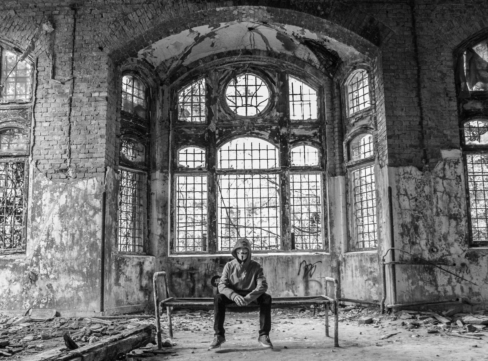
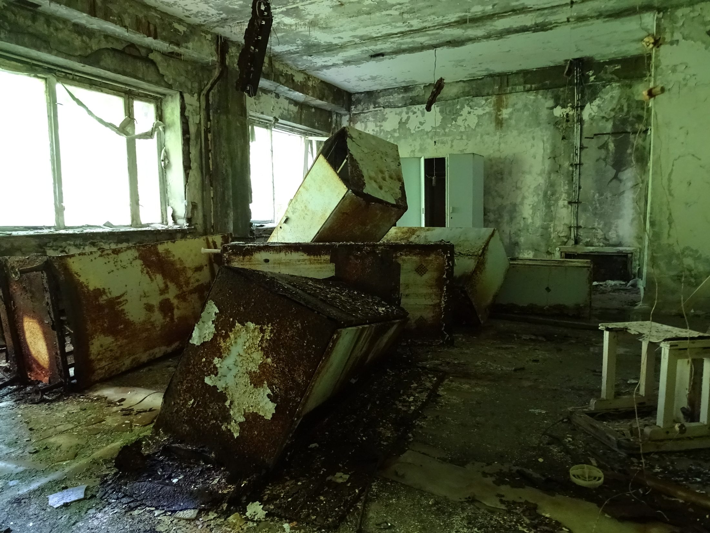
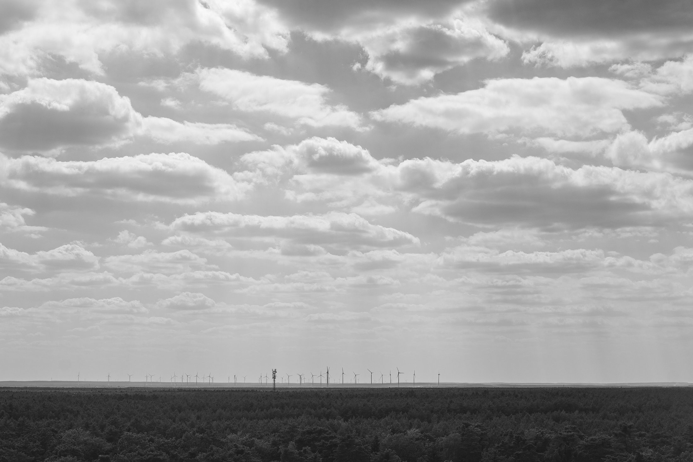
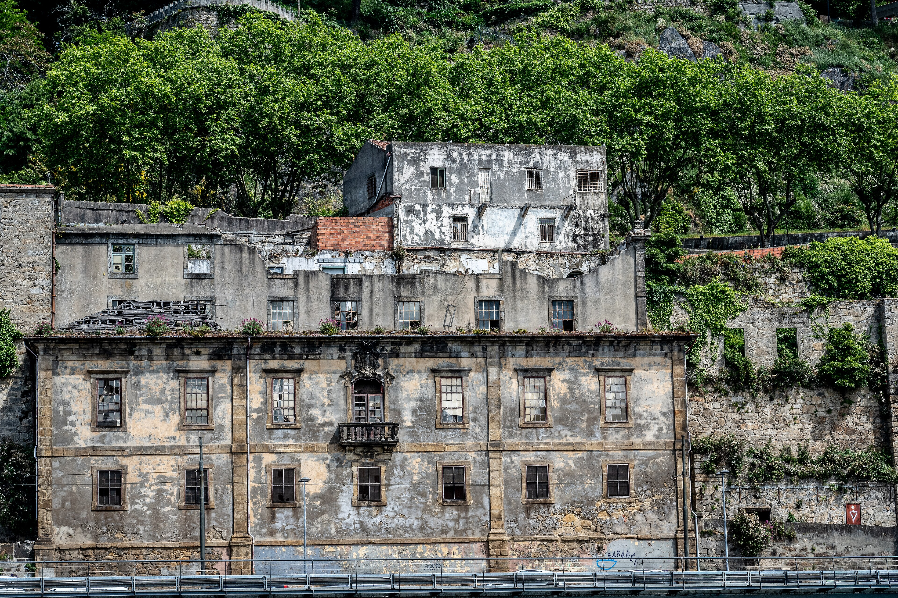
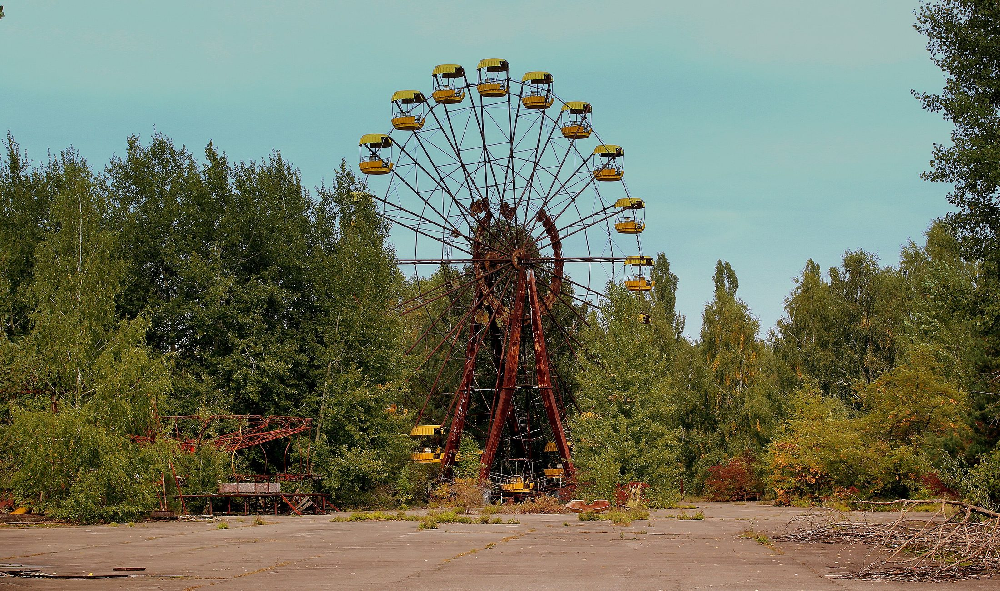
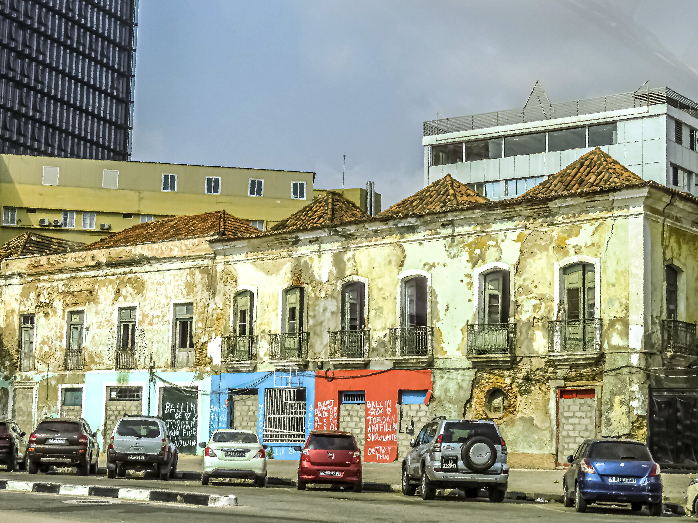
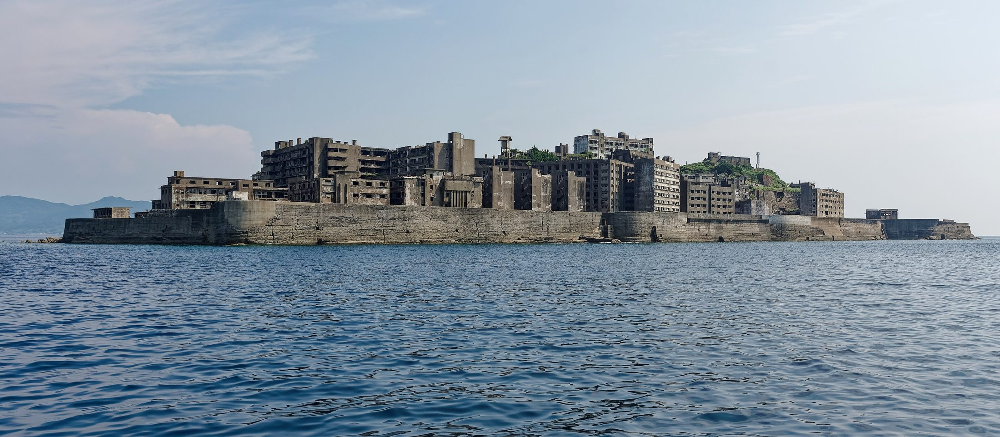

Layer 05 · Archive
Memory
A city is a story that outlives its narrators.
Scroll

01
Archive
Every wall
is a page
Paint over the graffiti and the graffiti becomes a layer. Tear down the theatre and the theatre becomes a name for a bus stop. Nothing here is deleted, only indexed.
Photo · Unsplash
Archive




02
Ghosts
The people who still
take the old route
Grandmothers walk to shops that closed in 1987. Children play in a courtyard that is now a car park. The map in your head is always one city out of date.
Photo · Unsplash

03
Ruins
Futures that were built
and then forgotten
The monorail to nowhere. The plaza for a festival that never came. Impossible cities are full of yesterday's tomorrows, and they are beautiful.
Photo · Unsplash
Nothing here is deleted, only indexed.Layer five, Memory